學士後醫考古題，一題一題練到會。
98 到 115 年、8 所學校、346 份考卷，近 2 萬題逐題作答。附校方公布的參考答案與答案釋疑，每題附完整詳解。
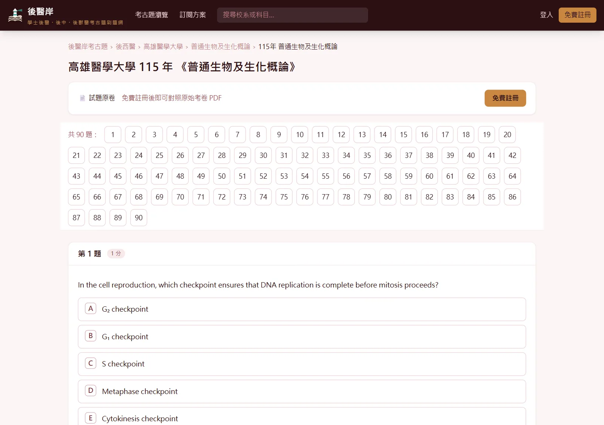
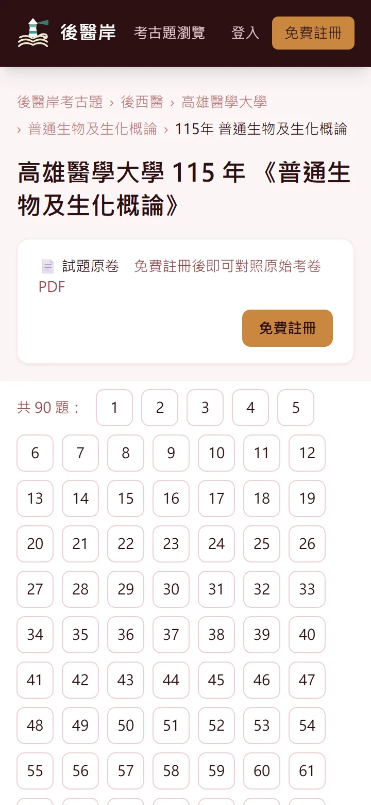
後醫岸是什麼
後醫岸是台灣學士後醫的考古題練習網站，收錄後西醫（高醫、清華、中山、中興）、後中醫（中國醫、慈濟、義守）、 後獸醫（亞洲大學）共 8 所學校的歷屆筆試。每份考卷都拆成一題一題，選擇題點了就知道對錯，再對照這一題的完整詳解。 答案以校方公布的參考答案為準，經過答案釋疑更正、送分或多選給分的題目也一併標註。 一個帳號三種學制通用，同時準備後中與後西也不必分開付費。每年放榜後持續補上新一年的試題。
三下就找到你要考的那份卷
從學制一路點到學校與考科，年度一鍵篩選，同一校同一科歷年的考卷一次列出來。
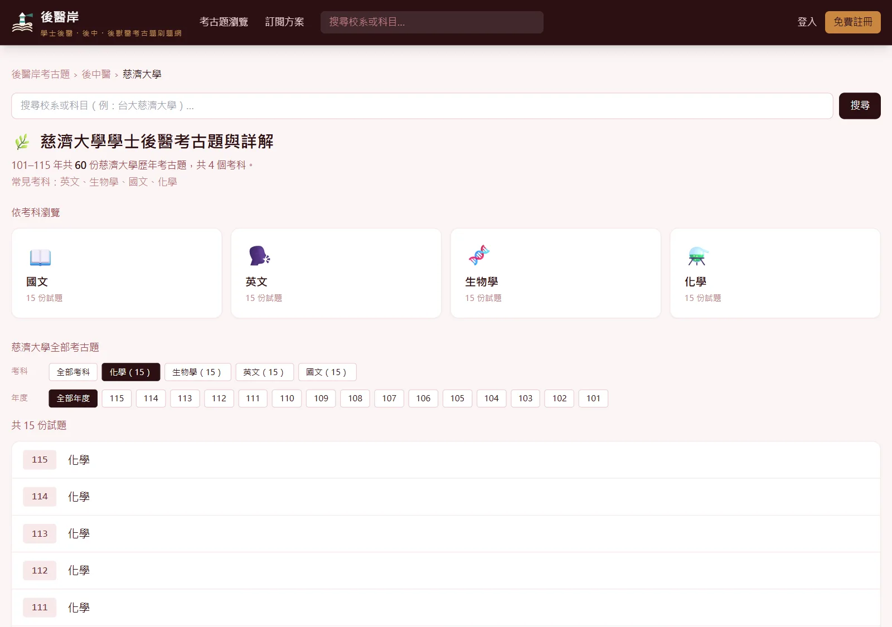
學制、學校、考科，一層一層點進去
首頁先選後中醫、後西醫或後獸醫，再選學校。學校頁上方的考科與年度按鈕可以一鍵篩選，再按一次就取消。慈濟後中化學 101 到 115 年的 15 份卷，一頁看完。
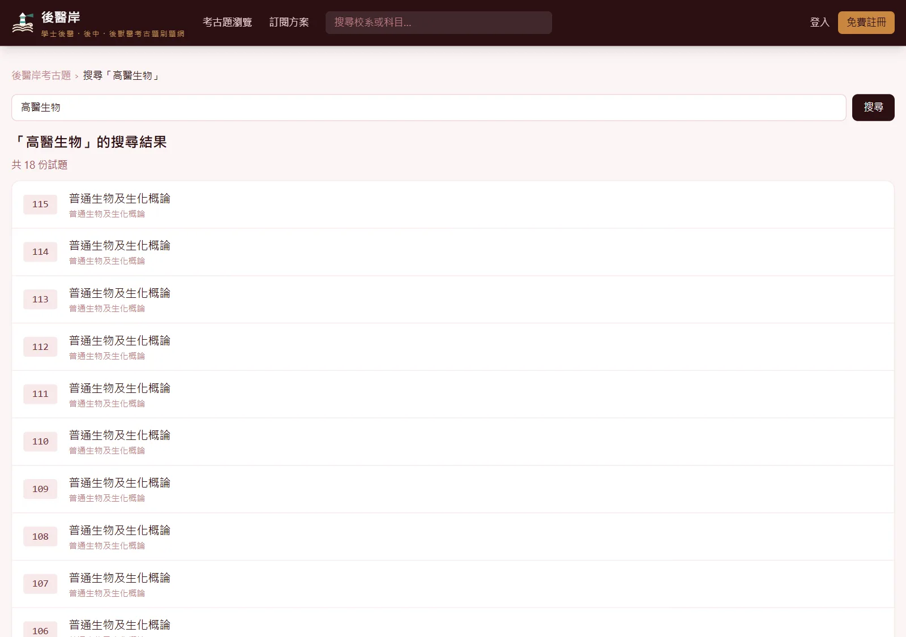
打簡稱也找得到
搜尋框輸入「高醫生物」「義守英文」就能直接找到考卷。
搜尋小技巧
- 校名簡稱直接打：高醫、清大、中國醫、慈濟、義守都認得。
- 學校＋考科連著打，不用空格，例如「中國醫化學」。
- 加上年度縮小範圍，例如「114 高醫」。
- 打學制也行，「後中醫生物」會列出三校的生物學。
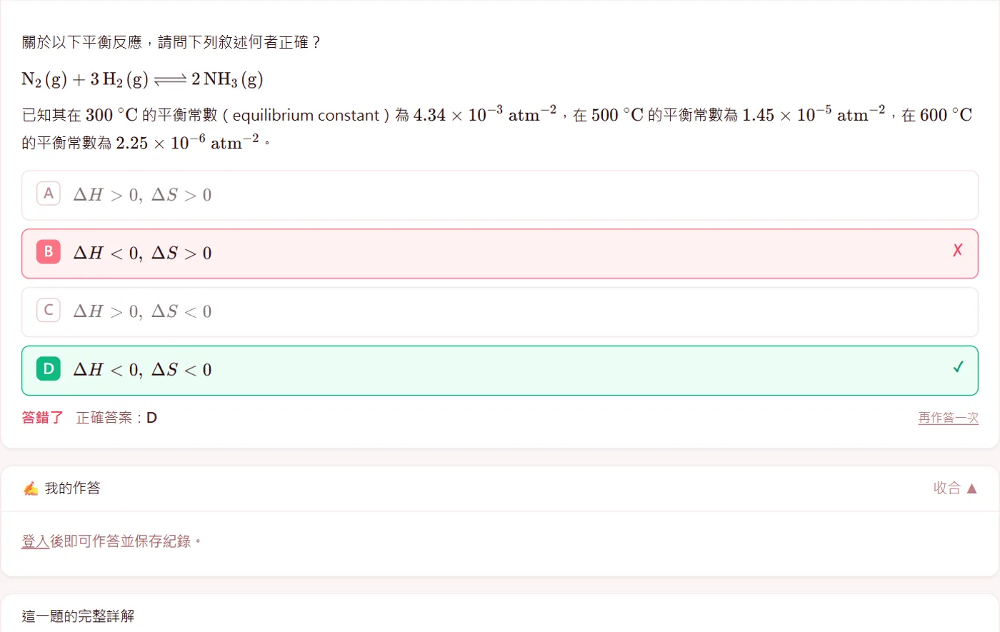
答案以校方釋疑後為準
後醫考完都有答案釋疑，有些題目會更正答案、送分，或判定多個選項都給分。 坊間解答常常還停在原公告，後醫岸直接採用釋疑後的最終答案，對答案不會被誤導。
站上怎麼呈現
- 選擇題直接以最終答案判定對錯，上圖這題原公告 B、釋疑更正為 D。
- 多個選項都給分的題目可以複選，按 對答案 判定。
- 送分題標示「本題經校方釋疑判定送分」。
- 不是選擇題的題目，展開 看官方參考答案 就能看到答案與校方釋疑原文。
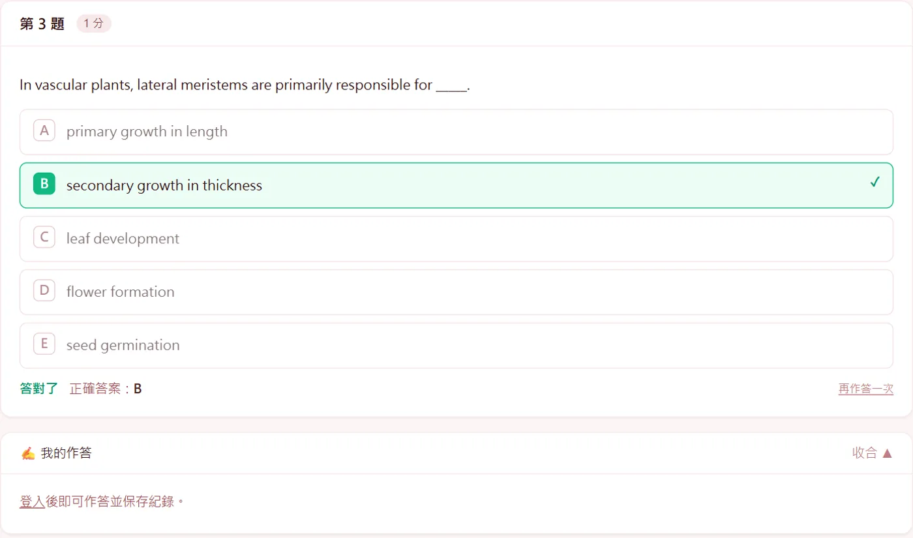
選擇題，點了就知道對錯
後醫筆試幾乎都是選擇題，所以選項做成可以直接點的按鈕。點下去立刻標出你選的對不對、正確答案是哪一個， 不用翻到卷末對答案。生物、化學、物理的式子都完整排版，手機上也看得清楚。
怎麼用
- 直接點選項作答，答錯的選項標紅、正確答案標綠。
- 按 再作答一次 可以把這一題重練。
- 想記下推理過程，在 我的作答 寫下來，登入後會保存。
- 題號列可以一鍵跳題，五十題、九十題的卷也不必一路往下滑。
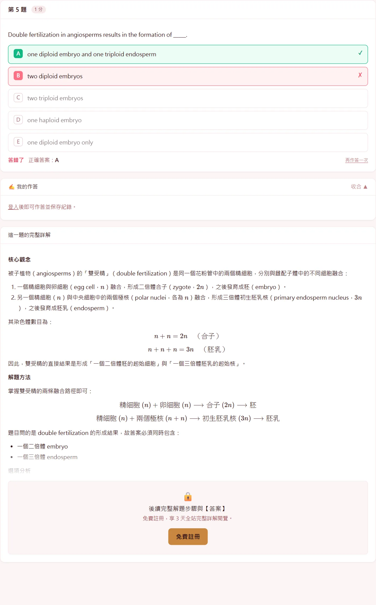
每一題都有完整詳解
詳解照「核心觀念、解題方法、選項分析、解題技巧、答案」的順序寫。 選擇題會把每個選項為什麼對、為什麼錯都講清楚，不是只丟一個答案。 化學、物理的推導一步一步寫出來，式子完整排版。
題組、附圖與原卷
- 閱讀測驗這類多題共用一段文章的題組，文章集中放在第一題前面。
- 有圖表的題目附上原卷對應的圖；註冊會員也能展開整份原卷 PDF 對照。
- 發現詳解有誤，在詳解下方按 詳解有誤？回報錯誤／提出修改建議，站方的回覆會出現在 我的帳戶。
卡住的時候，不只是看答案
詳解告訴你這題怎麼解；下面三個功能幫你找出自己為什麼不會，並把整塊觀念補起來。
AI 盲點診斷
把計算或推理過程打字送出，或拍下手寫的算式上傳，系統會對照標準解法，指出卡住的步驟、缺的觀念，還有下次怎麼自己檢查。方法跟詳解不同但推導正確，一樣判定正確。
- 在 我的作答 寫下過程，或按 上傳手寫作答照片（最多 2 張）。
- 按 AI 找盲點。
本題相關概念總複習
把這一題背後的整塊觀念整理成考前複習：這題在考什麼、必懂的觀念、常考的變形、容易混淆的地方，最後附上幾個自我檢查的問題。在題目下方展開就能看。
討論區與舉手發問
每一題下方都有討論區，可以分享自己的解法、討論詳解的疑問。想直接問站方就用 舉手發問，回覆會出現在「我的帳戶」。
手寫照片只用於這一次診斷，不會保存在伺服器；診斷結果會留在該題，下次回來還看得到。
四種顯示模式，久讀不累
頁面最下方的「顯示模式」一鍵切換，不用登入，選一次就會記住。
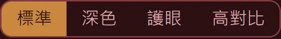
深色深色底，晚上刷題不刺眼。
護眼米黃底，長時間讀英文長文比較舒服。
高對比純白底、加深文字與框線，視力不好或在戶外強光下也看得清楚。
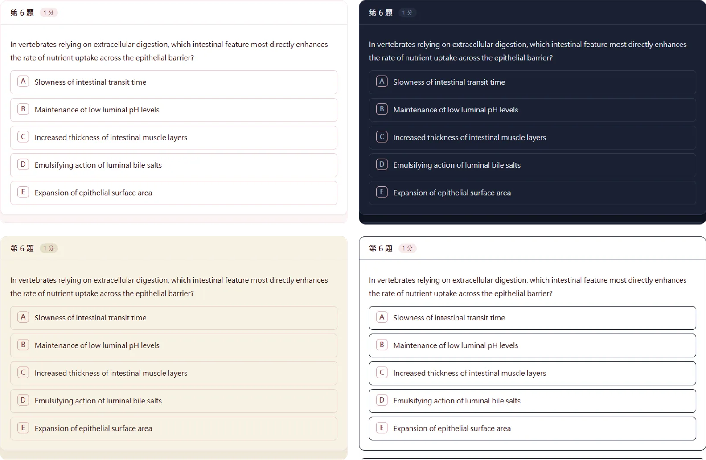
手機、平板都順手，零碎時間也能刷一題
版面會跟著螢幕調整：題號列自動換行、選項按鈕夠大好點、長算式可以左右滑、上傳照片直接開相機，直拿橫拿都能用。 通勤、排隊、實驗空檔，打開就能接著練。
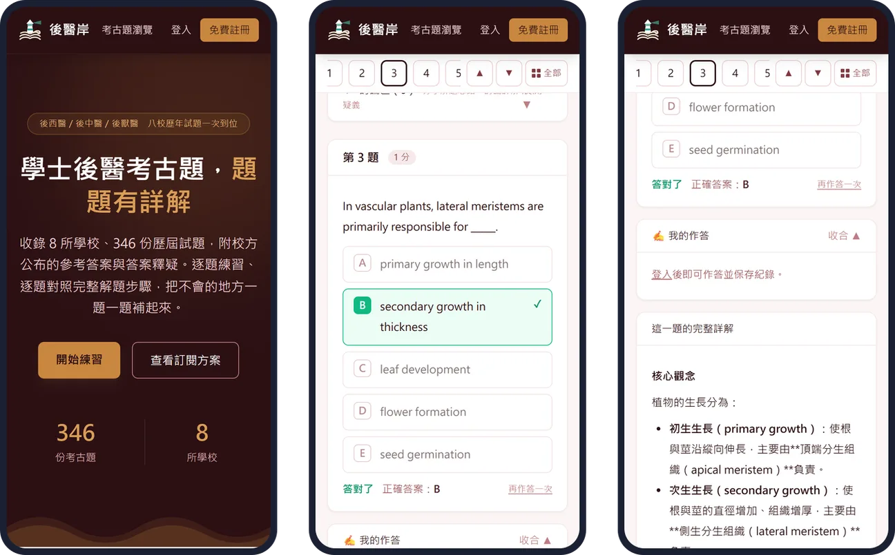
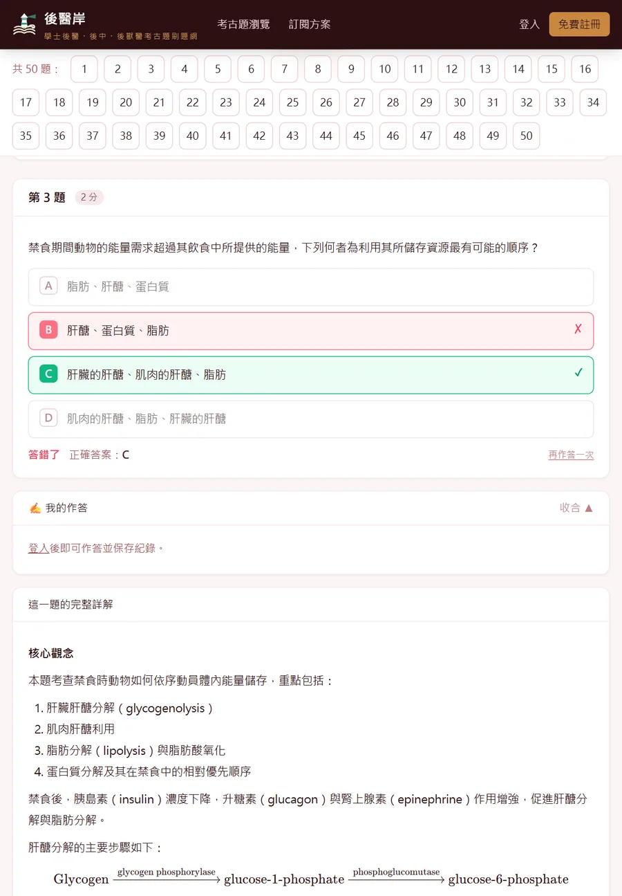
零碎時間這樣用
一次十題選擇題點了就對答案，十分鐘就能刷完一小段。
先寫再看在手機寫下推理，晚上用電腦再對照詳解，作答紀錄跟著帳號走。
把題目傳給自己從題號列跳到那一題再複製網址，換裝置直接打開同一題。
換個顯示模式晚上切深色，戶外切高對比。
安裝到主畫面，像 App 一樣開
- iPhone、iPad：用 Safari 打開後醫岸，點 分享，選 加入主畫面。
- Android 或電腦：瀏覽器選單選 安裝應用程式 或 加到主畫面；登入後「我的帳戶」頁也有安裝按鈕。
- 之後從主畫面點後醫岸圖示，就像 App 一樣全螢幕開啟。
使用方法
登入只要 Google 或 LINE 一鍵完成，不用另外設定密碼。
找考卷
首頁選學制與學校，或在搜尋框打「高醫生物」「114 高醫」。
逐題作答
直接點選項，立刻知道對錯；想留下推理就寫在「我的作答」。
對照詳解
看核心觀念、推導、選項分析與答案。
找出盲點
卡住就按「AI 找盲點」，或展開「本題相關概念總複習」。
討論或發問
在討論區分享解法，或用「舉手發問」直接問站方。
收錄範圍：三種學制、八所學校
最早收到民國 98 年，最新到 115 年；各校開始招生的年份不同，能收的都收了。